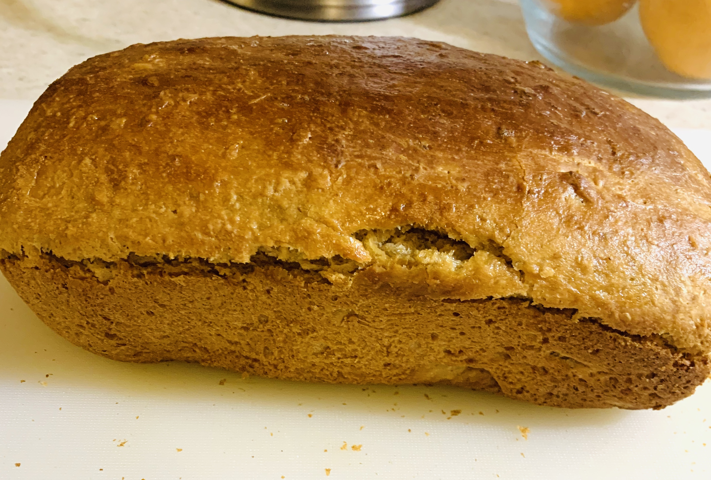
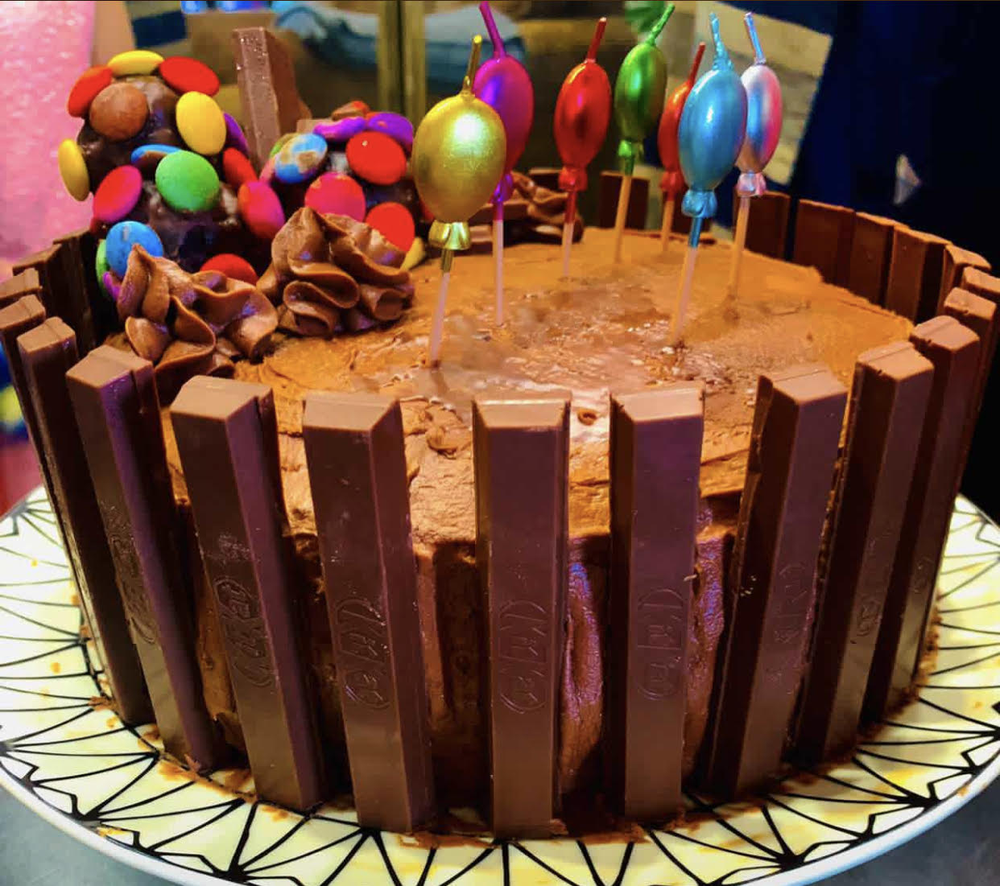
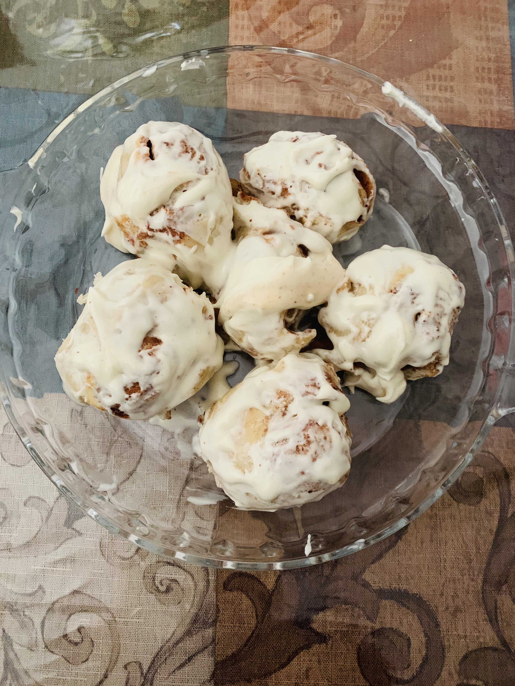
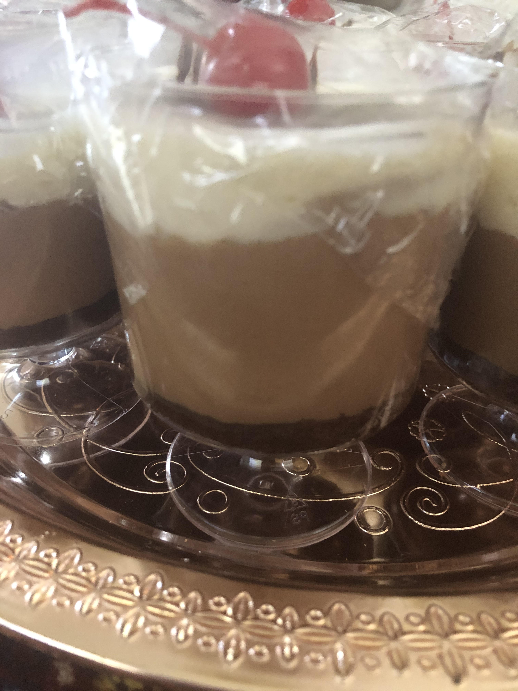
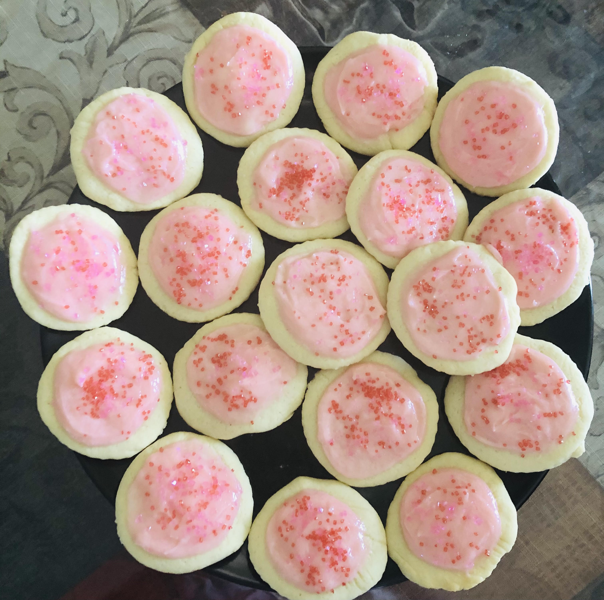
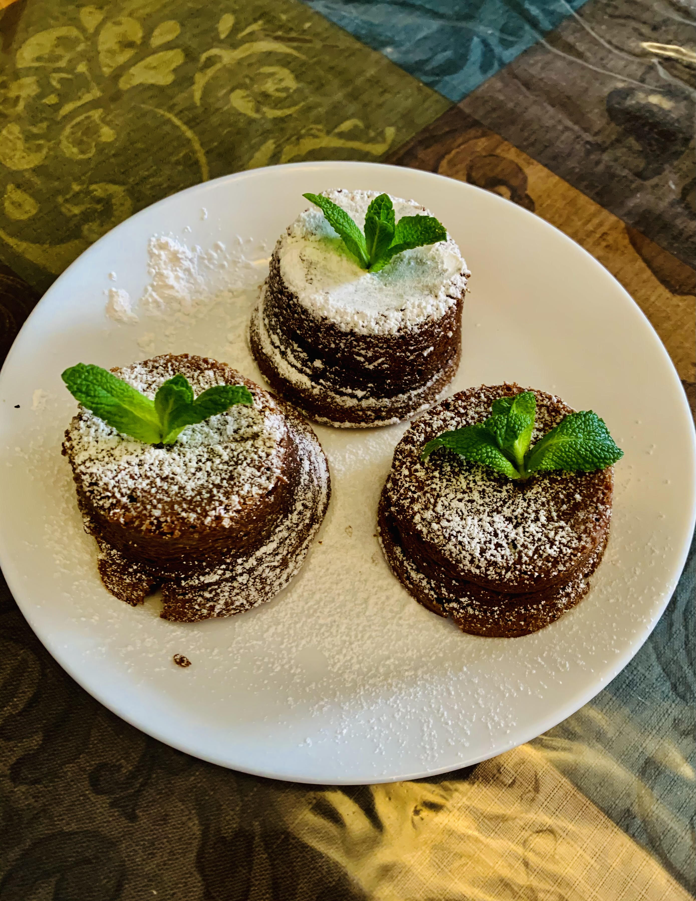

Whole Wheat Bread

My homemade chocolate cake

Homemade cinammon buns

Mousse cups

Lofthouse cookies

Lava Cakes

Jump to top
Intro
I started baking last summer during lockdown and I absolutely love it. It's by far one of my favourite activities to do. Over these few months I've tried multiple different new things to make. Plus I have a sweet tooth so the end-result is always worth waiting for. The first thing I made was bread and I was truly blown away. Homemade bread tastes far different and better than bread from the store. You should try making some yourselves. Infact, you can click here to see my hit lava cake recipe.
Cakes
After bread I tackled cakes. After making numerous cakes, these are the most important rules I've learned. Dry ingredients are always mixed first and seperately. Then the wet ingredients are mixed together seperately. Afterwards they are mixed together. It is absolutely essential to get the right measurements so you don't get weird results. And as a secret tip, you can try adding sour cream or yogurt to the cake mix to make it extra moist. Trust me it really works!!
Pastries/Breads
Bread doughs or pastry dough are not as hard as they really seem. It's all about taking the right measurements and loads of kneading. For example, to make eclairs, a french dessert you need to make choux pastry. This is basically made with eggs, milk, water, and flour. Timing is key to get the perfect results. With doughs it's always important to add just the right amount of flour. Adding too much flour can make your dough tough and far from soft. Adding less flour than you think you'll need is always the better option (at least from my experiences).:
Puddings
In my house, chocolate mousse is everyone's favourite dessert. Especially when it is served in a trifle filled with vanilla mousse as well. Making mousse is all about precision. You have to make sure that at every step the mousse is at the right temperature to get the best results. Of course nowadays, you can even find really simple 2-ingredient mousse recipes on google where all you do is mix some nutella and cream. For the best mousse, always use full-fat whipping cream that is 35%. Custard is pretty simple, but very dependent on time managment as well.
Cookies
Cookies are the first thing that coomes to mind when baking. The most important ingredient to make cookies is the butter. Cookies are made with flour, eggs, butter, baking powder, baking soda, salt, sugar, and vanilla extract. For the best cookie, cook for for 9-11 minutes. This will assure that your cookie is nice an moist. If you desire a crispy cookie, bake for 12-13 minutes.
Lava Cake Recipe
Lava cake or also known as petit gateau in french is a small luxurious chocolate delight that when cut open oozes out delcies melted chocolate. It is warm and gooey and is one of my favourite desserts. Here is how to make it.
Ingredients
- 1 1/4 cups dark chocolate
- 4 eggs
- 3/4 cups granulated sugar
- 1/2 cup unsalted butter (melted)
- 6 tbsp flour
- 1/8 tsp salt
Method
- Preheat the oven to 400
- Melt your dark chocolate in the microwave until it is nice and melted. Stir the chocolate with a rubber spatula and let the chocolate cool. In a seperate bowl, melt your butter.
- Whisk eggs and sugar using a mixer until the mixture becomes paler and thicker. Pour in the melted butter bit by bit and whisk.
- Add the flour and salt and mix everything together. Pour in your chocolate and mix again. Scrape down the sides of the bowl using a spatuala.
- Brush the ramekins with softened butter and add a pinch of flour to them. Pour the batter into the ramekins and bake for 10min.
- Let the cakes rest for 10min after being baked before you eat them.